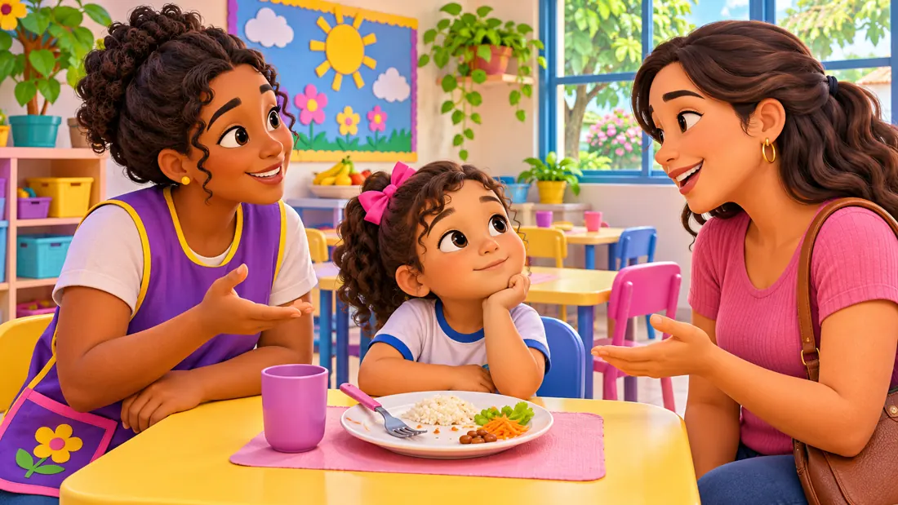
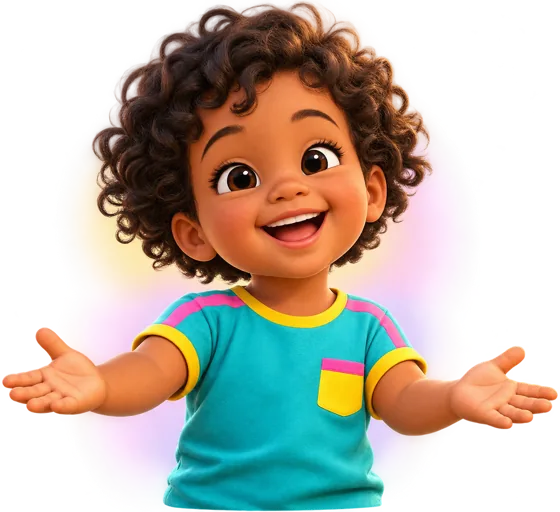

NÍVEL 0
Pequenos recados que ajudam a cuidar
Uma informação sobre o bebê pode ajudar a equipe a acolhê-lo com mais segurança.
Quando a família compartilha o que conhece da criança e a equipe escuta e conta como são as experiências no CMEI, a criança fica no centro de uma relação de cuidado e educação.
Uma parceria possível: cada família participa de um jeito e no tempo que pode. Escuta, confiança e troca de informações também são formas de estar junto.
Uma informação sobre o bebê pode ajudar a equipe a acolhê-lo com mais segurança.
Família e equipe podem trocar observações em conversas simples do dia a dia.
O que cada contexto observa pode ajudar a compreender melhor a criança.
Uma situação para pensar em respostas que acolhem e abrem espaço para o diálogo.
Conheça pequenos caminhos para manter uma comunicação respeitosa.
Algumas famílias colaboraram de diferentes maneiras para esse momento coletivo.
As imagens são ilustrações para representar as situações.
Hábitos e sinais do bebê ajudam a família e a equipe a se conhecerem melhor e a construir um acolhimento mais próximo.
A família conhece os jeitos de acalmar, os hábitos de sono, a alimentação e as preferências do bebê. A equipe observa como ele se sente, descansa, se alimenta e participa das experiências no CMEI. Compartilhar essas informações ajuda os adultos a cuidar em diálogo.
Toque em cada cena para ver um exemplo de conversa entre família e equipe.
Contar os hábitos que ajudam o bebê a relaxar pode orientar o acolhimento.
Para bebês no primeiro ano de vida, o Ministério da Saúde recomenda colocá-los para dormir de barriga para cima, e não de lado ou de bruços. O berço deve ficar sem objetos macios soltos, como naninhas, travesseiros ou brinquedos. Ver orientação.
Uma conversa respeitosa ajuda a compartilhar o que a família observa e como foi a refeição no CMEI.
A alimentação complementar começa a partir dos 6 meses. As preparações e consistências precisam ser adequadas à idade; o leite continua fazendo parte da alimentação conforme a orientação recebida. Consultar o Ministério da Saúde.
Chupeta, colo, voz ou um objeto afetivo podem fazer parte da rotina de acolhimento da criança.
A família pode compartilhar esses hábitos. Para o sono, a equipe segue as orientações de segurança e mantém o espaço de dormir livre de objetos macios soltos.
Uma noite diferente, uma mudança de hábito ou outro recado importante pode ser compartilhado.
Um recado breve na chegada ou na saída pode ser valioso. Conte à equipe o que considera importante para o cuidado do bebê; a equipe também pode compartilhar como ele passou o dia. O ConectaPais foi criado para aproximar as famílias e o CMEI, favorecer a interação e esclarecer dúvidas. Pela caixa “Tire suas Dúvidas!” na página principal, você pode enviar dúvidas gerais e acompanhar as respostas publicadas sem identificação. Para conversar sobre algo pessoal do bebê, procure diretamente a equipe.
Ver dúvidas respondidasO diálogo aproxima os contextos de vida do bebê e ajuda a equipe a planejar acolhimento e experiências com atenção à singularidade de cada criança, sem julgar os hábitos da família.
Uma parceria se fortalece quando a conversa não fica só nos avisos: há espaço para perguntar, ouvir e compartilhar.
Em casa, a família conhece hábitos, interesses e mudanças da criança; no CMEI, a equipe acompanha suas brincadeiras, relações, cuidados e aprendizagens. Quando esses olhares são compartilhados com respeito, a equipe compreende melhor a criança e a família conhece o que ela vive e aprende no CMEI. Juntos, podem combinar formas de acolher necessidades, valorizar conquistas e dar continuidade às aprendizagens, fortalecendo a confiança e o bem-estar da criança. A parceria não exige que casa e CMEI façam tudo igual: cada contexto tem seu papel, e a troca aproxima os adultos em torno do desenvolvimento da criança.
Uma mesma criança vive experiências em casa e no CMEI. Clique em cada quadrinho para abrir e fechar as falas.
O ConectaPais foi criado justamente para aproximar as famílias e o CMEI. Se surgir uma dúvida, você pode usar a caixa “Tire suas Dúvidas!” na página principal. O formulário pede o código de participante; as respostas publicadas em “Dúvidas respondidas” aparecem sem identificação.
Ver dúvidas respondidasA parceria não apaga as diferenças entre casa e CMEI. Ela aproxima informações e experiências, reconhecendo o papel de cada contexto na vida da criança.
Em casa, a família acompanha hábitos, interesses e mudanças; no CMEI, a equipe observa as interações, brincadeiras e aprendizagens. Quando esses olhares se encontram com respeito, fica mais fácil compreender o que a criança pode estar sentindo e oferecer um acolhimento cuidadoso. O ConectaPais também ajuda a fortalecer esse diálogo: é um espaço de interação e esclarecimento de dúvidas, para que as famílias se sintam acolhidas e participantes da parceria com a equipe.
Uma mudança em casa pode aparecer no CMEI como mais choro, irritação, quietude ou vontade de ficar perto do adulto. Esses sinais não definem a criança: são convites para observar, perguntar e acolher. Ao compartilhar o que cada um percebeu, família e equipe podem compreender melhor o momento vivido e pensar juntas em formas de apoiar a criança.
Toque em uma imagem para ampliá-la. Use as setas para avançar pelas etapas da parceria.
Se algo mudou em casa e a criança chega mais chorosa, irritada, quieta ou precisando de mais colo, compartilhar com a equipe, na conversa direta e somente o que você se sentir confortável em contar, pode ajudar a compreender o que ela está sentindo. Assim, a equipe pode acolhê-la sem rótulos e pensar em formas de apoio junto com a família. O ConectaPais foi criado para aproximar as famílias e o CMEI, favorecer a interação e esclarecer dúvidas. Pela caixa “Tire suas Dúvidas!” da página principal, você pode enviar dúvidas gerais e acompanhar as respostas publicadas sem identificação. Para conversar sobre algo pessoal da criança, procure diretamente a equipe.
Ver dúvidas respondidasConhecer os contextos da criança apoia a continuidade do cuidado e permite planejar propostas que acolham seus interesses e necessidades.
Uma situação-problema para pensar em respostas que mantêm a criança no centro.
Na saída, a educadora conta que a criança participou pouco do almoço e aceitou apenas alguns alimentos. A família comenta que, naquela manhã, ela também comeu menos que o habitual e que a percebeu mais quieta. A equipe e a família ainda não sabem o motivo; por isso, compartilham o que observaram e pensam em acompanhar o bem-estar da criança, sem pressioná-la ou tirar conclusões por causa de uma refeição. Como os adultos podem seguir essa conversa?
Toque em uma opção para ver a explicação. Toque novamente nela para fechar.

Descreva o que aconteceu, escute o que o outro contexto observou e pense em um próximo passo possível. Se necessário, combinem um novo momento para conversar. O ConectaPais também foi criado para aproximar as famílias e o CMEI, fortalecer a interação e esclarecer dúvidas. Para perguntas gerais, use a caixa “Tire suas Dúvidas!” na página principal e consulte as respostas publicadas sem identificação. Para conversar sobre uma situação pessoal da criança, procure diretamente a equipe.
Ver dúvidas respondidasUma situação do cotidiano não define a criança nem sua família. O diálogo respeitoso ajuda a compreender necessidades e acompanhar o bem-estar sem procurar culpados.
A parceria entre família e CMEI nasce do diálogo, do respeito e da confiança. Ela pode acontecer de diferentes formas, conforme a realidade de cada família, sempre com a criança no centro.
Cada família tem sua rotina e suas possibilidades. Nem sempre é possível estar fisicamente no CMEI, mas isso não significa estar ausente da vida escolar da criança. A presença também se mostra no interesse, nas perguntas, na confiança e na troca de informações com os professores e a equipe pedagógica.
Essa parceria pode acontecer em uma conversa na porta da sala, em um momento combinado por telefone ou WhatsApp e também pelo ConectaPais. Quando família e CMEI compartilham seus olhares com respeito, conseguem compreender melhor o que a criança está vivendo e pensar juntos no que ela precisa para se sentir acolhida, aprender e se desenvolver. Cada lado tem seu papel, e o diálogo aproxima esses esforços.
As setas mostram o que família, CMEI e ambos podem compartilhar. Toque nos blocos para abrir e fechar exemplos.
O que conhece e observa em casa.

A criança no centroO que observa e propõe no cotidiano.
Escuta, confiança e combinados possíveis para acolher e apoiar a criança.
Cada família participa conforme sua realidade. O diálogo pode começar com uma pequena troca.
O ConectaPais foi pensado como mais um caminho para aproximar famílias e CMEI. Acompanhar os temas e conhecer as propostas ajuda a família a participar da vida escolar da criança, mesmo quando não pode estar fisicamente no CMEI com frequência. Presença também é interesse, vínculo e comunicação possível para cada realidade. Se quiser entrar em contato com a equipe pedagógica, volte à página principal e procure a seção “Tire suas Dúvidas!”. Escreva sua pergunta por ali; a equipe pedagógica responderá, e a resposta publicada ficará disponível em “Dúvidas respondidas”.
A instituição acolhe a diversidade das famílias e promove participação, diálogo e escuta cotidiana. A parceria é construída ao longo do tempo, não depende de uma presença igual para todos.
Um momento marcante construído com a colaboração das famílias, da equipe e da comunidade.
Ao longo do ano, o CMEI realiza diferentes eventos e ações com a comunidade. A participação das famílias ajuda a tornar esses momentos possíveis e, em algumas iniciativas, a arrecadar recursos que apoiam a instituição e podem retornar em benefício das próprias crianças.
A Festa Junina é um dos eventos mais grandiosos e marcantes do CMEI. Ela acontece com muitas formas de colaboração: famílias que prestigiam a festa e acompanham as crianças, que compram ou ajudam a vender bingos, doam mantimentos, produtos ou serviços, e também quem oferece tempo e mão de obra nos preparativos. Cada gesto, quando possível, contribui para que a festa aconteça e fortalece os laços com a comunidade.
Apoiar a participação da criança, escolhendo uma vestimenta confortável e incentivando sua presença nas brincadeiras e apresentações, também faz parte desse momento. Nem todas as famílias conseguem participar do mesmo modo ou contribuir com recursos, e isso não diminui sua importância: cada realidade merece respeito.
A festa foi feita de muitos gestos. Toque em cada imagem para abrir e fechar um exemplo de colaboração.
A parceria não é uma obrigação nem precisa ser igual para todos. A presença pode acontecer de muitas formas: prestigiando a festa, ajudando nos preparativos ou apoiando a criança para participar. O importante é que cada família se sinta acolhida e contribua conforme sua realidade.
Eventos coletivos aproximam as crianças, as famílias, a equipe e a comunidade. Quando há diferentes possibilidades de participação, a colaboração fortalece o sentimento de pertencimento e beneficia a experiência das crianças no CMEI.